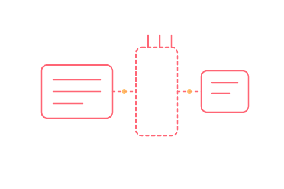

Schulung · Retrofit
Retrofit-Schulung mit VCDS
Nachgerüstete Komponenten fachgerecht per Codierung freischalten, sauber dokumentieren und regulatorisch richtig einordnen — praxisnah anhand echter Retrofit-Fälle aus dem Volkswagen-Konzern.

Eine Nachrüstung (Retrofit) ist selten mit dem Einbau der Hardware erledigt — erst die passende Codierung schaltet die Funktion im Fahrzeug frei. Diese Schulung zeigt, wie sich typische Retrofit-Fälle mit VCDS sauber umsetzen lassen: von der Grundeinstellung bis zur Anpassung betroffener Steuergeräte-Datensätze.
- Typische Retrofit-Fälle: Komfort- und Ausstattungsfunktionen nachträglich freischalten
- Anpassung betroffener Steuergeräte-Datensätze nach Hardware-Nachrüstung
- Saubere Dokumentation der durchgeführten Codierschritte
- Regulatorische Einordnung von Nachrüstungen im Kontext UNECE R156
Für wen & wie
Zielgruppe
Werkstätten, die regelmäßig Nachrüstungen (Retrofits) im Volkswagen-Konzern anbieten oder anbieten möchten.
Format & Dauer
Vor-Ort-Schulung mit realen Retrofit-Beispielen, Halbtag oder Tag je nach Umfang der behandelten Fälle.
Vorkenntnisse
Grundlegende VCDS-Kenntnisse empfohlen — lässt sich gut mit der Diagnose-Schulung „VCDS, VCP & ODIS" kombinieren.
Diese Schulung anfragen
Direkt über das Anfrageformular auf der Schulungsübersicht anfragen — „Retrofit mit VCDS" als Thema auswählen.